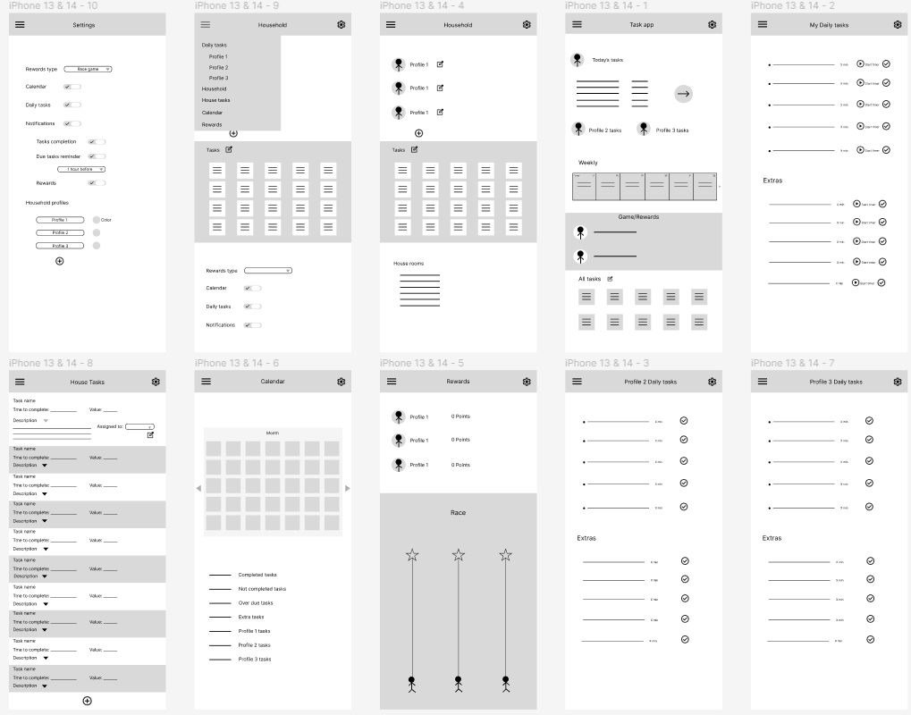
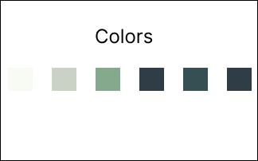
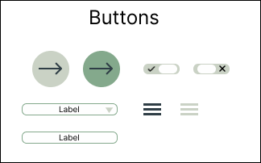
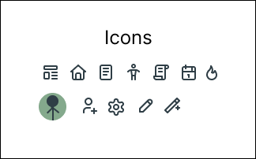
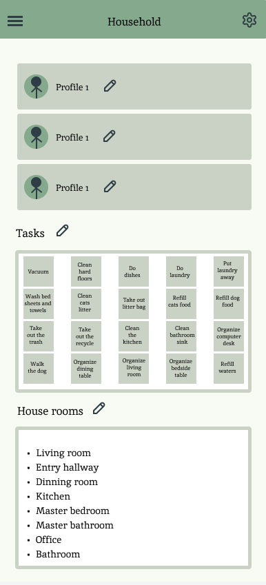
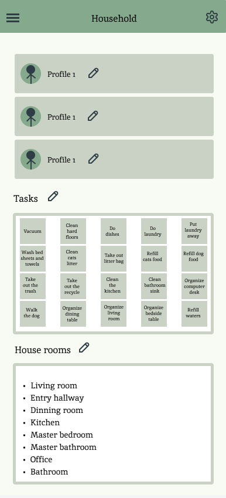
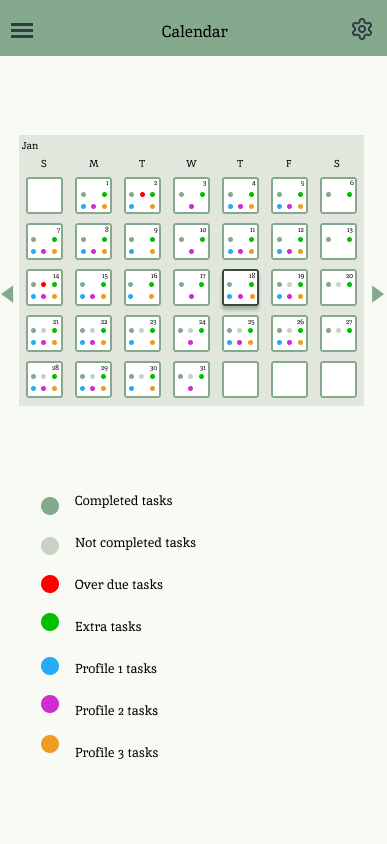
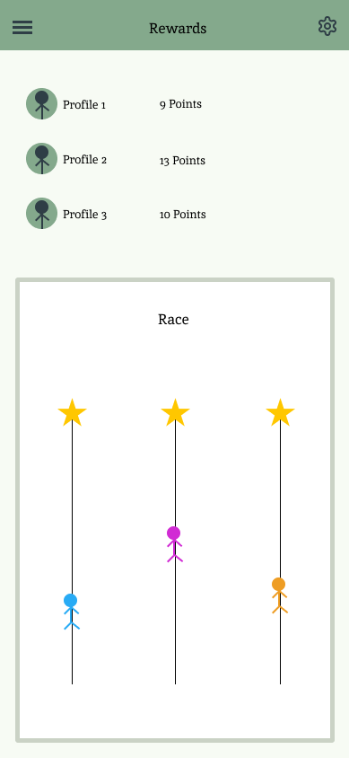
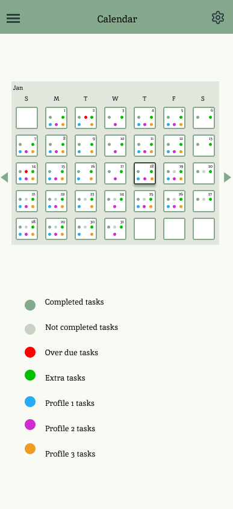
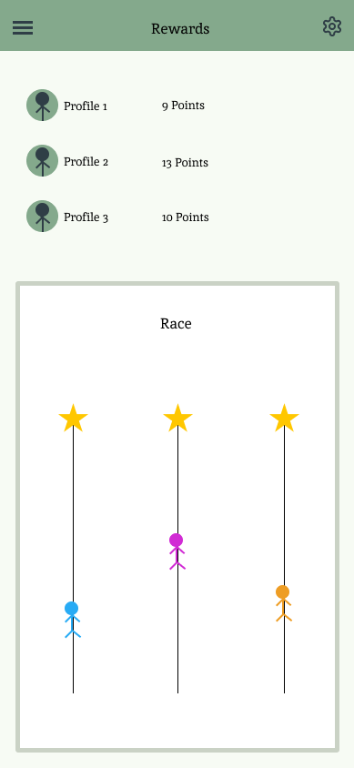

Role: Lead UX Design
Duration: 2 weeks
Platform: iOS Mobile App
Create an innovative app with a strong emphasis on versatility.
Design a UI that is simple yet easily recognizable, aiming for a visually cohesive and memorable look.
Establish an engaging and motivational user journey to enhance overall usability and functionality.
In this UX case study, I aimed to design an app that simplifies household chores. I delved into existing apps to craft a distinctive and adaptable solution for diverse households. This project provided an opportunity for creative exploration, as I tackled a substantial and time-intensive aspect of the UX design process.
By examining product reviews from competitors, I formulated these questions to extract insights. These insights played a crucial role in guiding my project, helping me pinpoint key focus areas.
In this project, I chose to adopt a more open approach as a researcher before diving into the design phase. This decision empowered me to formulate insightful questions that guided the project in a direction I believed would be more effective.
Why do people seek out this product in the first place?
In what ways can the design be more inclusive and diverse?
What are the essential features that users want and need from this app?
Having collected reviews from various competitive apps, I identified the most prevalent ones to extract insights and pinpoint pain points. These findings played a crucial role in guiding my design decisions and determining which features to prioritize in the project.
Provide the ability to customize the list of tasks further by allowing users to add details or notes to
each task.
Enable users to assign specific tasks to individual members within the household, fostering a more
collaborative approach.
Implement a feature that tracks overall progress over time, showcasing accomplishments and encouraging
users to stay consistent with their tasks.
Include a feedback system where users can provide comments or ratings on completed tasks, facilitating
communication within the household.
Explore the possibility of integrating the app with external calendar applications for seamless
synchronization and a unified view of all commitments.
Incorporate visual elements such as charts or graphs to represent progress trends, making it easier for
users to grasp their achievements.
Implement an intelligent system that suggests tasks based on user behavior, preferences, or overall
household patterns.
Ensure the app is accessible to users with diverse needs, considering features like voice commands or screen reader compatibility.

Concealing expenses until after app download.
Imposing pre-made chore lists without the option to customize.
Requiring login every time the app is closed, disrupting user experience.
Placing limitations on the app's functionality for free users.
Encountering bugs resulting in tasks not appearing or duplicates in the task list.
A straightforward and organized list outlining daily tasks for easy management.
Providing users with the flexibility to fully customize their chore lists.
Ensuring that all members of the household have equal access to the same set of information.
Implementing a rewarding system that serves as motivation for completing tasks, fostering a
positive and engaging user experience.
Offering timely notifications to keep users informed about their tasks, with the option for personalization to suit individual preferences and schedules.
A part-time working wife who takes pleasure in managing household chores and values everyone's participation. She actively seeks ways to motivate her partner to enjoy contributing to chores, recognizing it as an ongoing responsibility.
Age: 28
Occupation: Event host

Age: 30
Occupation: Software Engineer
A full-time working wife in search of constant stimulation during her leisure time. For her, completing chores can be challenging, so she looks for elements that trigger dopamine release, such as rewards or a gamified sense of progression, akin to a video game.
In my first design, I sought to incorporate all the features I intended to implement while maintaining simplicity and avoiding visual clutter. Additionally, I proactively considered the positioning of elements, distinguishing between textual content and icons. I explored ways to enhance interactivity, contemplating how the design could be made more engaging for users.
I aimed for a straightforward style in the design, incorporating soft pastel shades, particularly focusing on various tones of green. The goal was to maintain readability and ensure easy visualization of all information.
   
In my final design, simplicity meets functionality as I introduce a user-friendly interface that
revolves around the core principle of task management. Users have the autonomy to create a fully
customizable household task list, allowing assignments to specific members or serving as extra tasks
open to anyone. Each task is associated with a point value, contributing to a household game or reward
system that injects an element of healthy competition, motivating members to actively participate in
completing chores.
Tasks, whether recurring or one-time, are meticulously archived, providing a comprehensive view of the
entire household's responsibilities, including the duration of each task and the responsible
individual. The introduction of a calendar enhances organization, helping users stay on top of recurring
tasks and promptly address overdue assignments.
This design not only prioritizes practicality but also injects an element of fun and motivation into the household's routine, transforming chores into a collaborative and rewarding experience for all members.

 

 



This project served as a valuable exploration of various facets within the UX design process. By
conducting thorough research on competitors before embarking on the design phase, I strategically
outlined all desired features. This approach enabled a concentrated focus on the visual design aspect
without compromising functionality, ensuring a holistic and user-centric end product.
The experience significantly contributed to the enhancement of my research skills, emphasizing the importance of data organization. Through meticulous data organization, I was able to derive insights that were not only valuable but also specific to the unique aspects of my design ideas. This project became a pivotal opportunity for skill refinement and the application of strategic thinking in the UX design realm.